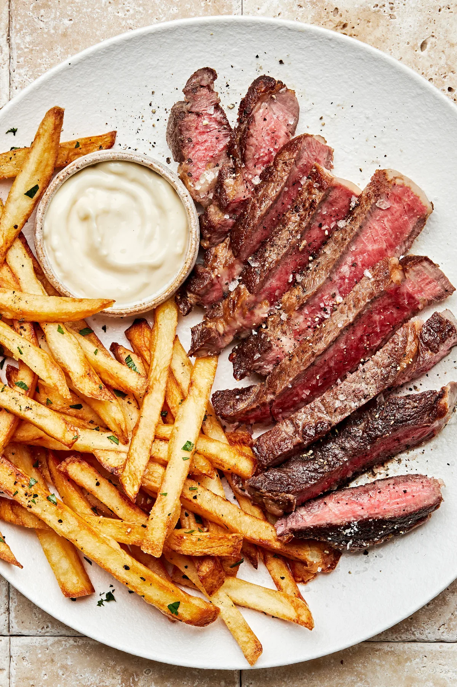

Steak Frites Recipe

Description
This Pan Seared Steak and Fries recipe is a classic and satisfying meal, featuring a perfectly seared steak paired with crispy homemade fries. Ideal for a hearty dinner.
Ingredients
- 2 ribeye steaks
- Salt and pepper to taste
- 2 tablespoons olive oil
- 2 tablespoons butter
- 2 cloves garlic, smashed
- Fresh rosemary or thyme sprigs
- 4 large potatoes, cut into fries
- Vegetable oil for frying
Steps
- Season steaks generously with salt and pepper.
- Heat olive oil in a skillet over high heat. Add steaks and sear for 3-4 minutes on each side.
- Add butter, garlic, and herbs to the skillet. Baste steaks with the melted butter for an additional 2 minutes.
- Remove steaks from skillet and let rest for 5 minutes.
- Heat vegetable oil in a deep fryer or large pot to 350°F (175°C).
- Fry potato fries in batches until golden brown and crispy. Drain on paper towels and season with salt.
- Serve steaks with fries on the side.